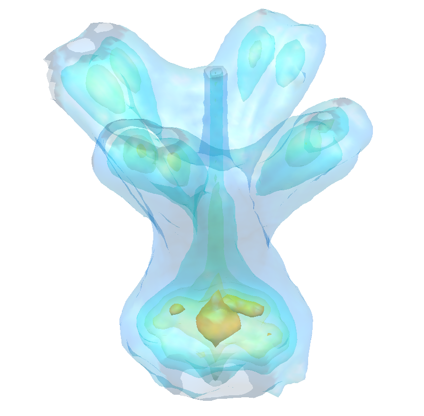

Navigation
index
next
|
rsMap3D
»

Table Of Contents
Welcome to the rsMap3D documentation!
Tutorial
Installation Instructions
Indices and tables
Next topic
Processing Data with rsMap3D
This Page
Show Source
Quick search
Enter search terms or a module, class or function name.
Welcome to the rsMap3D documentation!
¶
Tutorial
¶
Processing Data with rsMap3D
Introduction
Running rsMap3D
File Tab
Data Range Tab
Scans tab
Process Data Tab
Viewing Output data
View 3D volume data files in ParaView
General Notes
Loading the .vti data set
Scaling Intensities
Applying Filters to Data Sets
Contour
Calculator
Slice
Line Profile
Adding coordinate axes to the plot
Exporting data from Slices, Lines, etc.
Plotting slice data in other programs
Installation Instructions
¶
Installation of rsMap3D on Linux Host
Installation and setup of Canopy
Installing xrayutilities
Installing pySpec
Installing rsMap3D
Installation of rsMap3D on Mac/OSX Host
Installation and setup of Canopy
Installing xrayutilities
Installing pySpec
Installing rsMap3D
Installation of rsMap3D on Windows Host
Installation and setup of Canopy
Installing xrayutilities
Installing pySpec
Installing rsMap3D
Indices and tables
¶
Index
Module Index
Search Page
Navigation
index
next
|
rsMap3D
»